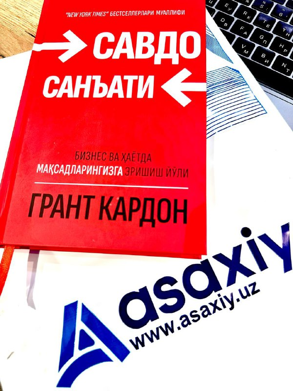

Asaxiy.uz жамоасидан навбатдаги янгилик

АҚШлик миллиардер, тадбиркор, кўчмас мулк бозори ёрқин намоёндаси - Grant Cardone нинг «SELL or be SOLD» - «Савдо санъати» асарининг ўзбек тилига таржимаси.
Тадбиркорлари учун жуда мухим мавзу, бизнинг ёш тадбиркорлик мухити хали хануз сотишни билмайди.
Буни бир тарафдан бозор тўлиқ мавжуд ўсиб бораётган эҳтиёжга мос товар ва хизматлар билан тўйинмагани, иккинчи тарафдан сотиш махорати камлиги ва рақобат барча бозорларда тенг ривожланмаганлиги билан изоҳлаш мумкин.
Давлат тарафдан эса рақобат мухити ривожига кўпинча «кош қуяман деб кўз чиқариши», баъзи қарорлар билан умуман рақобат имкониятини чеклаши ва рақобатни ривожлантириш стратегиясида самарасиз натижаларни кузатиш мумкин.
Буни маиший даражада - дўконда сотувчи телефонга назар аралаш сизга эътибор қилиши, қуруқ муомаласи, ҳамкасби билан гаплашиш аралаш ҳаридорга эътибор қаратиши, баъзида эса «осанг-ол бўлмаса нари тур» деган мазмунда муносабатда бўлиши ва бошқа мисоллар.
Юқори даражаларда эса сотувни коррупция, ҳаридорнинг вакилини сотиб олиш, тендерларни сохталаштиришга уриниш, ҳар хил ноқонуний найранглар ишлатиш одат экани аянчи хақиқат.
Асосий сабаби - сотиш билимига эга эмаслик. Махоратлик сотувчи дўконга мижозлар кети узилмаслигини таъминласа, катта даражада корпорациялар сотиш тўғридан тўғри истемолчи таъсир этиб, сотишни узоқ муддатли кўринишга келтириб, даромадларини бегоналар билан «ўртоқлашишга» тўғири келмайди.
Бизнесда муваффақиятиннг асоси сотишдир!
Бу лоиҳада ХалқБанки иштироки тасодифий бўлиб қолишини истамаган бўлар эдим. Ривожланган мамлакатлар ХалқБанклари банк махсулотларини сотишни «тешиб қўиш» тугул унча-мунча бошқа турдаги махсулотларни сотувини эгаллаганини кўришимиз мумкин. Бунга Германияда Sparkasse (халқ банки) тамоман почта хизматлари сотишни қўлга олганини мисол қилишимиз мумкин.
Ўйлайманги-ки бу меҳнат узбек халқи, ёшлар ва тадбиркорлар учун муносиб совға бўла олади.
Китоб - бебахо совға!